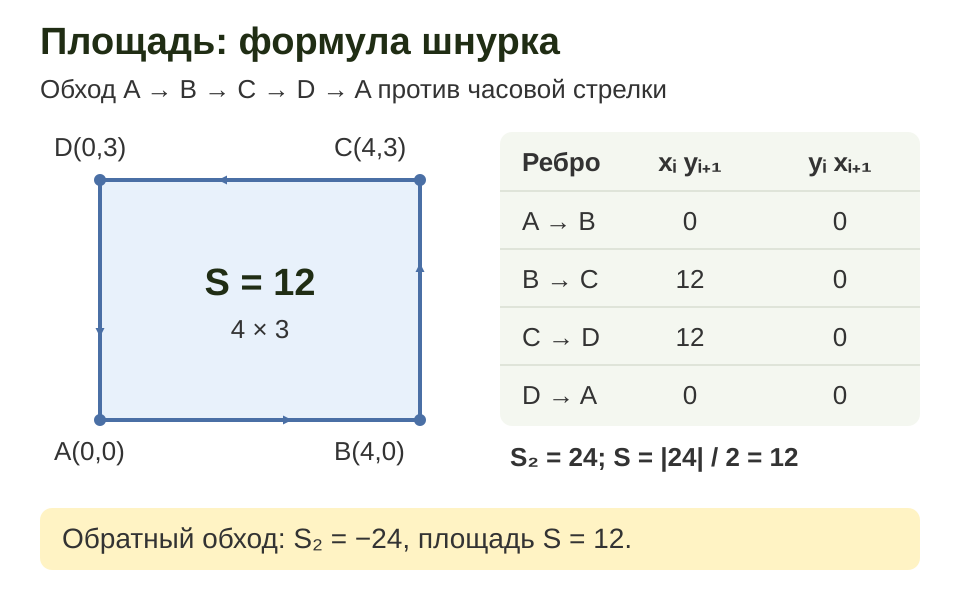
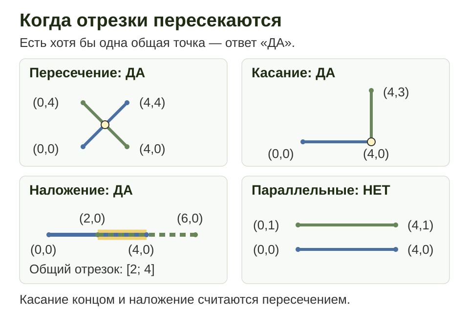
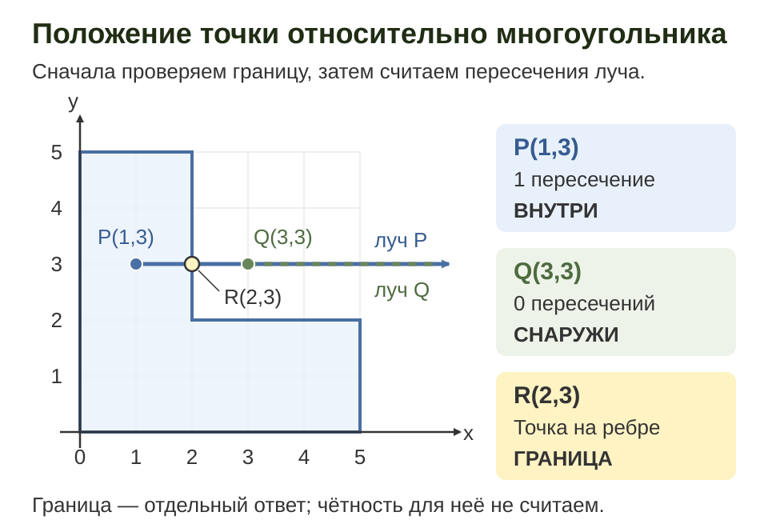
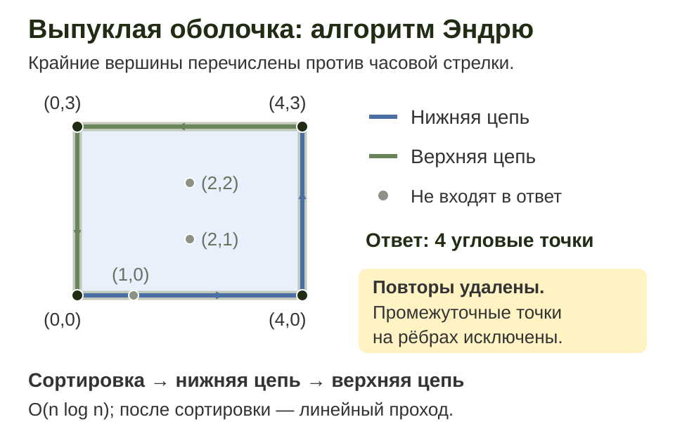

Вычислительная геометрия
Вычислительная геометрия превращает рисунок в точные проверки над координатами. В этой лекции работаем на плоскости: определяем повороты, считаем площади, проверяем пересечения и строим выпуклую оболочку.
В примерах координаты целые. Сначала сформулируем, что означает ответ и как обрабатывать границу, затем запишем алгоритм. Точку на границе многоугольника будем отличать от точки внутри.
Точки, векторы и расстояния
Точка $A=(x_A,y_A)$ задаёт положение, а вектор $\overrightarrow{AB}=(x_B-x_A,y_B-y_A)$ — перемещение. На рисунках ось $Ox$ направлена вправо, ось $Oy$ — вверх.
| Величина | Формула | Пример |
|---|---|---|
| Вектор $\overrightarrow{AB}$ | $(x_B-x_A,\ y_B-y_A)$ | $A=(1,1)$, $B=(4,5)$: $(3,4)$ |
| Квадрат расстояния | $|AB|^2=(x_B-x_A)^2+(y_B-y_A)^2$ | $3^2+4^2=25$, расстояние $5$ |
| Скалярное произведение | $u\cdot v=u_xv_x+u_yv_y$ | $(3,0)\cdot(0,2)=0$: векторы перпендикулярны |
| Косое произведение на плоскости | $u\times v=u_xv_y-u_yv_x$ | $(4,0)\times(2,3)=12$ |
Когда нужно только сравнить расстояния, сравнивайте их квадраты: извлечение корня не меняет порядок неотрицательных чисел и для сравнения не требуется.
Расстояние от точки $P$ до прямой $AB$ при $A\ne B$ равно $|\overrightarrow{AB}\times\overrightarrow{AP}|/|AB|$. Для расстояния до отрезка сначала проверяют проекцию: если она выходит за конец, ближайшей будет одна из вершин. Например, для $A=(0,0)$, $B=(4,0)$ расстояние от $(2,3)$ равно $3$, а от $(6,1)$ до отрезка — $\sqrt5$.
Ориентация тройки точек
Пусть даны три точки $O$, $A$ и $B$ с целыми координатами. Векторное (косое) произведение векторов $\vec{OA}$ и $\vec{OB}$ равно $(A_x - O_x)(B_y - O_y) - (A_y - O_y)(B_x - O_x)$. Его знак показывает, в какую сторону повернёт путь $O \to A \to B$.
Положительное значение означает поворот влево (против часовой стрелки), отрицательное - поворот вправо, ноль - точки лежат на одной прямой. Модуль значения равен удвоенной площади треугольника $OAB$.
Вычисление состоит из двух умножений и одного вычитания, поэтому время работы $O(1)$. Все величины целые, поэтому знак определяется точно, без погрешностей вещественной арифметики.
При координатах до $10^9$ по модулю все промежуточные значения помещаются в 64-битное целое. Функция возвращает знак: $1$, $-1$ или $0$.
Например, для O=(0,0), A=(4,0), B=(2,3) косое произведение равно 12, а площадь треугольника — 6. Если B=(6,0), определитель равен нулю, но точка лежит за концом отрезка OA.
Проверьте на рисунке. Изменяйте координаты B: сравните левый и правый поворот, точку на отрезке и точку на продолжении прямой.
Программа на Python
Реализация на Python
# Ориентация тройки точек (знак векторного произведения), время O(1)
# Результат: 1 - поворот влево (против часовой стрелки), -1 - поворот вправо, 0 - точки на одной прямой
def cross(o, a, b):
"""Векторное произведение (a - o) x (b - o)."""
return (a[0] - o[0]) * (b[1] - o[1]) - (a[1] - o[1]) * (b[0] - o[0])
def orientation(o, a, b):
value = cross(o, a, b)
return (value > 0) - (value < 0) # +1, -1 или 0
def main():
o, a = (0, 0), (4, 0)
for b in [(4, 3), (4, -3), (8, 0), (-2, 0)]:
print(f"orientation(O, A, {b}) = {orientation(o, a, b)}")
if __name__ == "__main__":
main()
Программа на C++
Реализация на C++
// Ориентация тройки точек (знак векторного произведения), время O(1)
// Результат: 1 - поворот влево (против часовой стрелки), -1 - поворот вправо, 0 - точки на одной прямой
#include <iostream>
struct Point {
long long x, y;
};
// Векторное произведение (a - o) x (b - o); при координатах до 10^9 по модулю 64-битного типа хватает
long long cross(Point o, Point a, Point b) {
return (a.x - o.x) * (b.y - o.y) - (a.y - o.y) * (b.x - o.x);
}
int orientation(Point o, Point a, Point b) {
long long value = cross(o, a, b);
return (value > 0) - (value < 0);
}
int main() {
Point o{0, 0};
Point a{4, 0};
Point points[] = {{4, 3}, {4, -3}, {8, 0}, {-2, 0}};
for (const Point& b : points) {
std::cout << "orientation(O, A, (" << b.x << ", " << b.y << ")) = "
<< orientation(o, a, b) << "\n";
}
return 0;
}
Программа на Rust
Реализация на Rust
// Ориентация тройки точек (знак векторного произведения), время O(1)
// Результат: 1 - поворот влево (против часовой стрелки), -1 - поворот вправо, 0 - точки на одной прямой
#[derive(Clone, Copy)]
pub struct Point {
pub x: i64,
pub y: i64,
}
// Векторное произведение (a - o) x (b - o); при координатах до 10^9 по модулю i64 хватает
pub fn cross(o: Point, a: Point, b: Point) -> i64 {
(a.x - o.x) * (b.y - o.y) - (a.y - o.y) * (b.x - o.x)
}
pub fn orientation(o: Point, a: Point, b: Point) -> i64 {
cross(o, a, b).signum()
}
fn main() {
let o = Point { x: 0, y: 0 };
let a = Point { x: 4, y: 0 };
let points = [(4, 3), (4, -3), (8, 0), (-2, 0)];
for (x, y) in points {
let b = Point { x, y };
println!("orientation(O, A, ({}, {})) = {}", x, y, orientation(o, a, b));
}
}
Точка на отрезке
Для принадлежности точки $P$ отрезку $AB$ нужны два условия: коллинеарность $\operatorname{cross}(A,B,P)=0$ и попадание в ограничивающий прямоугольник:
$\min(x_A,x_B)\le x_P\le\max(x_A,x_B)$, $\min(y_A,y_B)\le y_P\le\max(y_A,y_B)$.
Одних сравнений координат недостаточно: точка $(2,3)$ находится в прямоугольнике диагонального отрезка $(0,0)$–$(4,4)$, но не лежит на его прямой. У вырожденного отрезка $A=B$ принадлежит только сама точка $A$. Все проверки выполняются за $O(1)$.
Площадь простого многоугольника (формула шнурка)
Пусть вершины многоугольника $P_0, P_1, \ldots, P_{n-1}$ заданы по порядку обхода контура, и $P_n = P_0$. Тогда удвоенная площадь выражается формулой шнурка: $2S = \left| \sum_{i=0}^{n-1} (x_i y_{i+1} - x_{i+1} y_i) \right|$.
Удвоенная площадь выбрана намеренно: сумма целых слагаемых даёт целое $2S$, и не нужно делить на 2 и работать с дробями. Знак суммы до взятия модуля показывает направление обхода: положительный знак соответствует обходу против часовой стрелки.
Алгоритм делает один проход по рёбрам, поэтому время работы $O(n)$, дополнительная память $O(1)$. Формула даёт площадь простого многоугольника, то есть без самопересечений. Для пустого списка вершин результат равен $0$.


Программа на Python
Реализация на Python
# Площадь простого многоугольника по формуле шнурка, время O(n)
# Вершины идут по контуру по порядку; возвращается удвоенная площадь 2S (целое число)
def polygon_double_area(points):
total = 0
count = len(points)
for index in range(count):
x1, y1 = points[index]
x2, y2 = points[(index + 1) % count]
total += x1 * y2 - x2 * y1
return abs(total)
def main():
rectangle = [(0, 0), (4, 0), (4, 3), (0, 3)]
triangle = [(0, 0), (4, 0), (0, 3)]
print("прямоугольник 4x3: 2S =", polygon_double_area(rectangle))
print("треугольник: 2S =", polygon_double_area(triangle))
print("обратный обход: 2S =", polygon_double_area(rectangle[::-1]))
print("без вершин: 2S =", polygon_double_area([]))
if __name__ == "__main__":
main()
Программа на C++
Реализация на C++
// Площадь простого многоугольника по формуле шнурка, время O(n)
// Вершины идут по контуру по порядку; возвращается удвоенная площадь 2S (целое число)
#include <cstddef>
#include <cstdlib>
#include <iostream>
#include <vector>
struct Point {
long long x, y;
};
// Сумма x_i * y_{i+1} - x_{i+1} * y_i по рёбрам контура (последняя вершина соединяется с первой).
// При координатах до 10^6 по модулю и n до 10^6 сумма не выходит за пределы 64-битного типа.
long long polygon_double_area(const std::vector<Point>& points) {
std::size_t n = points.size();
long long total = 0;
for (std::size_t i = 0; i < n; ++i) {
const Point& p = points[i];
const Point& q = points[(i + 1) % n];
total += p.x * q.y - q.x * p.y;
}
return std::abs(total);
}
int main() {
std::vector<Point> rectangle = {{0, 0}, {4, 0}, {4, 3}, {0, 3}};
std::vector<Point> triangle = {{0, 0}, {4, 0}, {0, 3}};
std::vector<Point> reversed(rectangle.rbegin(), rectangle.rend());
std::vector<Point> empty;
std::cout << "прямоугольник 4x3: 2S = " << polygon_double_area(rectangle) << "\n";
std::cout << "треугольник: 2S = " << polygon_double_area(triangle) << "\n";
std::cout << "обратный обход: 2S = " << polygon_double_area(reversed) << "\n";
std::cout << "без вершин: 2S = " << polygon_double_area(empty) << "\n";
return 0;
}
Программа на Rust
Реализация на Rust
// Площадь простого многоугольника по формуле шнурка, время O(n)
// Вершины идут по контуру по порядку; возвращается удвоенная площадь 2S (целое число)
#[derive(Clone, Copy)]
pub struct Point {
pub x: i64,
pub y: i64,
}
// Сумма x_i * y_{i+1} - x_{i+1} * y_i по рёбрам контура (последняя вершина соединяется с первой).
// При координатах до 10^6 по модулю и n до 10^6 сумма не выходит за пределы i64.
pub fn polygon_double_area(points: &[Point]) -> i64 {
let n = points.len();
let mut total: i64 = 0;
for i in 0..n {
let p = points[i];
let q = points[(i + 1) % n];
total += p.x * q.y - q.x * p.y;
}
total.abs()
}
fn main() {
let rectangle = [(0, 0), (4, 0), (4, 3), (0, 3)].map(|(x, y)| Point { x, y });
let triangle = [(0, 0), (4, 0), (0, 3)].map(|(x, y)| Point { x, y });
let reversed: Vec<Point> = rectangle.iter().rev().copied().collect();
let empty: Vec<Point> = Vec::new();
println!("прямоугольник 4x3: 2S = {}", polygon_double_area(&rectangle));
println!("треугольник: 2S = {}", polygon_double_area(&triangle));
println!("обратный обход: 2S = {}", polygon_double_area(&reversed));
println!("без вершин: 2S = {}", polygon_double_area(&empty));
}
Пересечение двух отрезков
Даны отрезки $P_1P_2$ и $Q_1Q_2$. Обозначим через $d_1$ и $d_2$ знаки поворота точек $P_1$ и $P_2$ относительно прямой $Q_1Q_2$, а через $d_3$ и $d_4$ - знаки поворота точек $Q_1$ и $Q_2$ относительно прямой $P_1P_2$.
Если $d_1 d_2 < 0$ и $d_3 d_4 < 0$, то концы каждого отрезка лежат по разные стороны от прямой другого. Тогда точка пересечения прямых лежит внутри обоих отрезков, и отрезки пересекаются.
Во всех остальных случаях пересечение возможно только касанием или наложением, и тогда хотя бы один конец одного отрезка лежит на другом. Такой конец имеет нулевой знак поворота относительно прямой другого отрезка, и остаётся проверить, попадает ли он в прямоугольник отрезка: $\min(a_x, b_x) \le c_x \le \max(a_x, b_x)$ и то же для $y$.
Вырожденные отрезки (точки) обрабатываются теми же условиями. Вычисление состоит из четырёх ориентаций и нескольких сравнений, поэтому время работы $O(1)$.


В программах этого раздела помощник on_segment проверяет только ограничивающий прямоугольник: его вызывают после проверки нулевой ориентации. Полная проверка точки на отрезке состоит из обоих условий.
Программа на Python
Реализация на Python
# Пересечение двух отрезков (с касанием и наложением), время O(1)
# Отрезки P1P2 и Q1Q2 пересекаются, если у них есть хотя бы одна общая точка
def orientation(a, b, c):
value = (b[0] - a[0]) * (c[1] - a[1]) - (b[1] - a[1]) * (c[0] - a[0])
return (value > 0) - (value < 0) # +1 - поворот влево, -1 - вправо, 0 - одна прямая
def on_segment(a, b, c):
"""Точка c, лежащая на одной прямой с отрезком ab, принадлежит ему, если попадает в его прямоугольник."""
return min(a[0], b[0]) <= c[0] <= max(a[0], b[0]) and min(a[1], b[1]) <= c[1] <= max(a[1], b[1])
def segments_intersect(p1, p2, q1, q2):
d1 = orientation(q1, q2, p1)
d2 = orientation(q1, q2, p2)
d3 = orientation(p1, p2, q1)
d4 = orientation(p1, p2, q2)
if d1 * d2 < 0 and d3 * d4 < 0:
return True
return (
(d1 == 0 and on_segment(q1, q2, p1))
or (d2 == 0 and on_segment(q1, q2, p2))
or (d3 == 0 and on_segment(p1, p2, q1))
or (d4 == 0 and on_segment(p1, p2, q2))
)
def main():
cases = {
"крест": ((0, 0), (4, 4), (0, 4), (4, 0)),
"на одной прямой, не перекрываются": ((0, 0), (2, 2), (3, 3), (5, 5)),
"наложение": ((0, 0), (4, 0), (2, 0), (6, 0)),
"касание концами": ((0, 0), (4, 0), (4, 0), (4, 5)),
"параллельные": ((0, 0), (4, 0), (0, 1), (4, 1)),
}
for name, (p1, p2, q1, q2) in cases.items():
print(f"{name}: {segments_intersect(p1, p2, q1, q2)}")
if __name__ == "__main__":
main()
Программа на C++
Реализация на C++
// Пересечение двух отрезков (с касанием и наложением), время O(1)
// Отрезки P1P2 и Q1Q2 пересекаются, если у них есть хотя бы одна общая точка
#include <algorithm>
#include <iostream>
struct Point {
long long x, y;
};
// Знак поворота (b - a) x (c - a): 1 - поворот влево, -1 - вправо, 0 - точки на одной прямой
int orientation(Point a, Point b, Point c) {
long long value = (b.x - a.x) * (c.y - a.y) - (b.y - a.y) * (c.x - a.x);
return (value > 0) - (value < 0);
}
// Точка c, лежащая на одной прямой с отрезком ab, принадлежит ему, если попадает в его прямоугольник
bool on_segment(Point a, Point b, Point c) {
return std::min(a.x, b.x) <= c.x && c.x <= std::max(a.x, b.x) &&
std::min(a.y, b.y) <= c.y && c.y <= std::max(a.y, b.y);
}
bool segments_intersect(Point p1, Point p2, Point q1, Point q2) {
int d1 = orientation(q1, q2, p1);
int d2 = orientation(q1, q2, p2);
int d3 = orientation(p1, p2, q1);
int d4 = orientation(p1, p2, q2);
if (d1 * d2 < 0 && d3 * d4 < 0) {
return true;
}
return (d1 == 0 && on_segment(q1, q2, p1)) ||
(d2 == 0 && on_segment(q1, q2, p2)) ||
(d3 == 0 && on_segment(p1, p2, q1)) ||
(d4 == 0 && on_segment(p1, p2, q2));
}
int main() {
std::cout << std::boolalpha;
std::cout << "крест: " << segments_intersect({0, 0}, {4, 4}, {0, 4}, {4, 0}) << "\n";
std::cout << "на одной прямой, не перекрываются: "
<< segments_intersect({0, 0}, {2, 2}, {3, 3}, {5, 5}) << "\n";
std::cout << "наложение: " << segments_intersect({0, 0}, {4, 0}, {2, 0}, {6, 0}) << "\n";
std::cout << "касание концами: " << segments_intersect({0, 0}, {4, 0}, {4, 0}, {4, 5}) << "\n";
std::cout << "параллельные: " << segments_intersect({0, 0}, {4, 0}, {0, 1}, {4, 1}) << "\n";
return 0;
}
Программа на Rust
Реализация на Rust
// Пересечение двух отрезков (с касанием и наложением), время O(1)
// Отрезки P1P2 и Q1Q2 пересекаются, если у них есть хотя бы одна общая точка
#[derive(Clone, Copy)]
pub struct Point {
pub x: i64,
pub y: i64,
}
// Знак поворота (b - a) x (c - a): 1 - поворот влево, -1 - вправо, 0 - точки на одной прямой
pub fn orientation(a: Point, b: Point, c: Point) -> i64 {
((b.x - a.x) * (c.y - a.y) - (b.y - a.y) * (c.x - a.x)).signum()
}
// Точка c, лежащая на одной прямой с отрезком ab, принадлежит ему, если попадает в его прямоугольник
pub fn on_segment(a: Point, b: Point, c: Point) -> bool {
a.x.min(b.x) <= c.x && c.x <= a.x.max(b.x) && a.y.min(b.y) <= c.y && c.y <= a.y.max(b.y)
}
pub fn segments_intersect(p1: Point, p2: Point, q1: Point, q2: Point) -> bool {
let d1 = orientation(q1, q2, p1);
let d2 = orientation(q1, q2, p2);
let d3 = orientation(p1, p2, q1);
let d4 = orientation(p1, p2, q2);
if d1 * d2 < 0 && d3 * d4 < 0 {
return true;
}
(d1 == 0 && on_segment(q1, q2, p1))
|| (d2 == 0 && on_segment(q1, q2, p2))
|| (d3 == 0 && on_segment(p1, p2, q1))
|| (d4 == 0 && on_segment(p1, p2, q2))
}
fn main() {
let to_point = |(x, y): (i64, i64)| Point { x, y };
let cases = [
("крест", (0, 0), (4, 4), (0, 4), (4, 0)),
("на одной прямой, не перекрываются", (0, 0), (2, 2), (3, 3), (5, 5)),
("наложение", (0, 0), (4, 0), (2, 0), (6, 0)),
("касание концами", (0, 0), (4, 0), (4, 0), (4, 5)),
("параллельные", (0, 0), (4, 0), (0, 1), (4, 1)),
];
for (name, p1, p2, q1, q2) in cases {
let hit = segments_intersect(to_point(p1), to_point(p2), to_point(q1), to_point(q2));
println!("{}: {}", name, hit);
}
}
Принадлежность точки многоугольнику
Пусть вершины простого многоугольника перечислены по контуру, по часовой стрелке или против неё. Рёбра могут касаться только в общей вершине соседних рёбер; самопересечения в этой задаче не допускаются. Возвращаем один из трёх результатов: INSIDE — внутри, BOUNDARY — на границе, OUTSIDE — снаружи.
- Проверяем принадлежность каждому отрезку границы. При совпадении сразу возвращаем
BOUNDARY. - Пускаем из точки горизонтальный луч вправо. Ребро рассматриваем, только если $(y_A>y_P)\ne(y_B>y_P)$. Полуоткрытое правило сохраняет правильную чётность при проходе луча через вершину и исключает горизонтальные рёбра.
- Меняем чётность при каждом пересечении справа: нечётное число даёт
INSIDE, чётное —OUTSIDE.
Деление не требуется: для ребра, идущего вверх, пересечение справа определяется положительным $\operatorname{cross}(A,B,P)$, а для ребра, идущего вниз, — отрицательным. Проверка всех рёбер занимает $O(n)$ времени и $O(1)$ дополнительной памяти.


У пустого контура внутренних и граничных точек нет. В примерах ниже контур из одной или двух точек также обработан: возможна только принадлежность границе, а внутренней области нет.
Программа на Python
Реализация на Python
# Положение точки относительно простого многоугольника: O(n) времени, O(1) памяти.
# Координаты целые, |x|, |y| <= 10^9. Самопересечения не допускаются.
def cross(a, b, point):
return ((b[0] - a[0]) * (point[1] - a[1])
- (b[1] - a[1]) * (point[0] - a[0]))
def on_segment(a, b, point):
return (cross(a, b, point) == 0
and min(a[0], b[0]) <= point[0] <= max(a[0], b[0])
and min(a[1], b[1]) <= point[1] <= max(a[1], b[1]))
def point_location(polygon, point):
# Сначала вся граница: сюда входят вершины и вырожденные рёбра.
count = len(polygon)
for index, a in enumerate(polygon):
if on_segment(a, polygon[(index + 1) % count], point):
return "BOUNDARY"
inside = False
for index, a in enumerate(polygon):
b = polygon[(index + 1) % count]
# Полуоткрытый интервал по y сохраняет правильную чётность у вершин.
if (a[1] > point[1]) == (b[1] > point[1]):
continue
# Пересечение правее точки: знак cross совпадает со знаком b_y-a_y.
# Деления и умножения двух векторных произведений нет.
if (cross(a, b, point) > 0) == (b[1] > a[1]):
inside = not inside
return "INSIDE" if inside else "OUTSIDE"
def main():
polygon = [(0, 0), (5, 0), (5, 2), (2, 2), (2, 5), (0, 5)]
for point in [(1, 3), (3, 3), (2, 3)]:
direct = point_location(polygon, point)
reverse = point_location(polygon[::-1], point)
print(f"{point}: {direct}; reversed: {reverse}")
if __name__ == "__main__":
main()
Программа на C++
Реализация на C++
// Положение точки относительно простого многоугольника: O(n) времени, O(1) памяти.
// Целые координаты |x|, |y| <= 10^9. Самопересечения не допускаются.
#include <algorithm>
#include <iostream>
#include <vector>
struct Point {
long long x, y;
};
long long cross(Point a, Point b, Point point) {
return (b.x - a.x) * (point.y - a.y) - (b.y - a.y) * (point.x - a.x);
}
bool on_segment(Point a, Point b, Point point) {
return cross(a, b, point) == 0 &&
std::min(a.x, b.x) <= point.x && point.x <= std::max(a.x, b.x) &&
std::min(a.y, b.y) <= point.y && point.y <= std::max(a.y, b.y);
}
const char* point_location(const std::vector<Point>& polygon, Point point) {
const std::size_t count = polygon.size();
// Сначала вся граница, включая вершины и вырожденные рёбра.
for (std::size_t index = 0; index < count; ++index) {
if (on_segment(polygon[index], polygon[(index + 1) % count], point)) {
return "BOUNDARY";
}
}
bool inside = false;
for (std::size_t index = 0; index < count; ++index) {
const Point a = polygon[index];
const Point b = polygon[(index + 1) % count];
// Полуоткрытый интервал по y сохраняет правильную чётность у вершин.
if ((a.y > point.y) == (b.y > point.y)) {
continue;
}
// Знаки совпадают, если пересечение луча с ребром правее точки.
// Нет деления и умножения двух векторных произведений.
if ((cross(a, b, point) > 0) == (b.y > a.y)) {
inside = !inside;
}
}
return inside ? "INSIDE" : "OUTSIDE";
}
int main() {
const std::vector<Point> polygon = {{0, 0}, {5, 0}, {5, 2}, {2, 2}, {2, 5}, {0, 5}};
const std::vector<Point> reversed(polygon.rbegin(), polygon.rend());
for (Point point : std::vector<Point>{{1, 3}, {3, 3}, {2, 3}}) {
std::cout << "(" << point.x << ", " << point.y << "): "
<< point_location(polygon, point) << "; reversed: "
<< point_location(reversed, point) << "\n";
}
}
Программа на Rust
Реализация на Rust
// Положение точки относительно простого многоугольника: O(n) времени, O(1) памяти.
// Целые координаты |x|, |y| <= 10^9. Самопересечения не допускаются.
type Point = (i64, i64);
fn cross(a: Point, b: Point, point: Point) -> i64 {
(b.0 - a.0) * (point.1 - a.1) - (b.1 - a.1) * (point.0 - a.0)
}
fn on_segment(a: Point, b: Point, point: Point) -> bool {
cross(a, b, point) == 0
&& a.0.min(b.0) <= point.0 && point.0 <= a.0.max(b.0)
&& a.1.min(b.1) <= point.1 && point.1 <= a.1.max(b.1)
}
fn point_location(polygon: &[Point], point: Point) -> &'static str {
let count = polygon.len();
// Сначала вся граница, включая вершины и вырожденные рёбра.
for index in 0..count {
if on_segment(polygon[index], polygon[(index + 1) % count], point) {
return "BOUNDARY";
}
}
let mut inside = false;
for index in 0..count {
let a = polygon[index];
let b = polygon[(index + 1) % count];
// Полуоткрытый интервал по y сохраняет правильную чётность у вершин.
if (a.1 > point.1) == (b.1 > point.1) {
continue;
}
// Знаки совпадают, если пересечение правее точки. Деления нет.
if (cross(a, b, point) > 0) == (b.1 > a.1) {
inside = !inside;
}
}
if inside { "INSIDE" } else { "OUTSIDE" }
}
fn main() {
let polygon = vec![(0, 0), (5, 0), (5, 2), (2, 2), (2, 5), (0, 5)];
let reversed: Vec<Point> = polygon.iter().rev().copied().collect();
for point in [(1, 3), (3, 3), (2, 3)] {
println!("({}, {}): {}; reversed: {}", point.0, point.1,
point_location(&polygon, point), point_location(&reversed, point));
}
}
Выпуклая оболочка: алгоритм Эндрю
Выпуклая оболочка — наименьший выпуклый многоугольник, содержащий все исходные точки. Представьте натянутую вокруг точек резинку: внутренние точки не становятся вершинами оболочки.
Алгоритм Эндрю, или метод монотонной цепи, использует сортировку и проверку поворотов:
- Удаляем повторяющиеся точки и сортируем оставшиеся сначала по $x$, затем по $y$.
- Строим нижнюю цепь слева направо. Пока последние две точки цепи и новая точка дают правый поворот или лежат на одной прямой, удаляем последнюю точку цепи.
- Тем же способом строим верхнюю цепь в обратном порядке. Соединяем цепи, не дублируя их крайние точки.
В этой версии условие удаления — $\operatorname{cross}\le0$: в ответ входят только крайние вершины, без промежуточных точек на рёбрах. Если все точки лежат на одной прямой, ответ — два конца; для одной различной точки — она сама; для пустого ввода — пустой список. Невырожденная оболочка выдаётся против часовой стрелки, без повторения первой вершины в конце.


Программа на Python
Реализация на Python
# Выпуклая оболочка Эндрю: O(n log n) времени, O(n) дополнительной памяти.
# Только крайние вершины, против часовой стрелки, без повторения первой.
# Целые координаты |x|, |y| <= 10^9; Python вычисляет произведение точно.
def cross(a, b, point):
return ((b[0] - a[0]) * (point[1] - a[1])
- (b[1] - a[1]) * (point[0] - a[0]))
def build_half(points):
half = []
for point in points:
# Удаляем правые повороты и промежуточные точки на прямой.
while len(half) >= 2 and cross(half[-2], half[-1], point) <= 0:
half.pop()
half.append(point)
return half
def convex_hull(points):
points = sorted(set(points))
if len(points) <= 1:
return points
lower = build_half(points)
upper = build_half(reversed(points))
# Концы общие у обеих цепей; каждый оставляем один раз.
return lower[:-1] + upper[:-1]
def main():
points = [(0, 0), (4, 0), (4, 3), (0, 3), (2, 1), (2, 2), (1, 0), (0, 0)]
collinear = [(2, 2), (0, 0), (1, 1), (3, 3), (1, 1)]
for label, sample in [("hull", points), ("collinear", collinear)]:
print(f"{label}:", " ".join(f"({x}, {y})" for x, y in convex_hull(sample)))
if __name__ == "__main__":
main()
Программа на C++
Реализация на C++
// Оболочка Эндрю: O(n log n) времени, O(n) дополнительной памяти.
// Только крайние вершины, против часовой стрелки, без повторения первой.
// Целые координаты |x|, |y| <= 10^9; векторное произведение помещается в long long.
#include <algorithm>
#include <iostream>
#include <vector>
struct Point {
long long x, y;
bool operator<(const Point& other) const {
return x < other.x || (x == other.x && y < other.y);
}
bool operator==(const Point& other) const {
return x == other.x && y == other.y;
}
};
long long cross(Point a, Point b, Point point) {
return (b.x - a.x) * (point.y - a.y) - (b.y - a.y) * (point.x - a.x);
}
std::vector<Point> build_half(const std::vector<Point>& points) {
std::vector<Point> half;
for (Point point : points) {
// Удаляем правые повороты и промежуточные точки на прямой.
while (half.size() >= 2 && cross(half[half.size() - 2], half.back(), point) <= 0) {
half.pop_back();
}
half.push_back(point);
}
return half;
}
std::vector<Point> convex_hull(std::vector<Point> points) {
std::sort(points.begin(), points.end());
points.erase(std::unique(points.begin(), points.end()), points.end());
if (points.size() <= 1) {
return points;
}
std::vector<Point> lower = build_half(points);
std::reverse(points.begin(), points.end());
std::vector<Point> upper = build_half(points);
// У обеих цепей общие концы: каждый оставляем один раз.
lower.pop_back();
upper.pop_back();
lower.insert(lower.end(), upper.begin(), upper.end());
return lower;
}
void print_hull(const char* label, const std::vector<Point>& points) {
std::cout << label << ":";
for (Point point : convex_hull(points)) {
std::cout << " (" << point.x << ", " << point.y << ")";
}
std::cout << "\n";
}
int main() {
print_hull("hull", {{0, 0}, {4, 0}, {4, 3}, {0, 3}, {2, 1}, {2, 2}, {1, 0}, {0, 0}});
print_hull("collinear", {{2, 2}, {0, 0}, {1, 1}, {3, 3}, {1, 1}});
}
Программа на Rust
Реализация на Rust
// Оболочка Эндрю: O(n log n) времени, O(n) дополнительной памяти.
// Только крайние вершины, против часовой стрелки, без повторения первой.
// Целые координаты |x|, |y| <= 10^9; векторное произведение помещается в i64.
type Point = (i64, i64);
fn cross(a: Point, b: Point, point: Point) -> i64 {
(b.0 - a.0) * (point.1 - a.1) - (b.1 - a.1) * (point.0 - a.0)
}
fn build_half(points: &[Point]) -> Vec<Point> {
let mut half = Vec::new();
for &point in points {
// Удаляем правые повороты и промежуточные точки на прямой.
while half.len() >= 2 && cross(half[half.len() - 2], half[half.len() - 1], point) <= 0 {
half.pop();
}
half.push(point);
}
half
}
fn convex_hull(points: &[Point]) -> Vec<Point> {
let mut points = points.to_vec();
points.sort_unstable();
points.dedup();
if points.len() <= 1 {
return points;
}
let mut lower = build_half(&points);
points.reverse();
let mut upper = build_half(&points);
// У обеих цепей общие концы: каждый оставляем один раз.
lower.pop();
upper.pop();
lower.extend(upper);
lower
}
fn main() {
let points = vec![(0, 0), (4, 0), (4, 3), (0, 3), (2, 1), (2, 2), (1, 0), (0, 0)];
let collinear = vec![(2, 2), (0, 0), (1, 1), (3, 3), (1, 1)];
for (label, sample) in [("hull", points), ("collinear", collinear)] {
print!("{}:", label);
for (x, y) in convex_hull(&sample) {
print!(" ({}, {})", x, y);
}
println!();
}
}
Точность и граничные случаи
Для целых координат знак определителя можно вычислять точно. В Python int не имеет фиксированного предела разрядности; в C++ и Rust тип нужно выбрать с запасом до выполнения умножения.
| Примеры в лекции | Достаточное ограничение для 64-битных знаковых вычислений |
|---|---|
| Ориентация, пересечение, луч и оболочка | $|x|,|y|\le10^9$: оценка модуля косого произведения $8\cdot10^{18}$ меньше $2^{63}-1$. |
| Сумма шнурка | При $|x|,|y|\le M$ достаточно $2nM^2<2^{63}$. В примерах C++/Rust подходят $n\le10^6$, $M\le10^6$. |
В проверке пересечения перемножаются знаки ориентаций из множества $\{-1,0,1\}$. Перемножение двух исходных больших определителей могло бы переполнить тип.
Для вещественных координат ситуация сложнее: округление способно изменить знак почти нулевого определителя. Одна фиксированная константа eps не даёт универсальной гарантии для всех масштабов. Для таких задач существуют адаптивные точные геометрические предикаты Джонатана Шевчука. В данной лекции используем целочисленные предикаты.
Перед решением проверьте контракт: учитываются ли касания, как представлена граница, могут ли точки совпадать, допустимы ли нулевые отрезки и коллинеарные наборы. У многоугольника вершины должны идти по контуру, а не в произвольном порядке.
Сводка алгоритмов
| Задача | Время | Что важно |
|---|---|---|
| Поворот тройки, площадь треугольника | $O(1)$ | Знак или модуль косого произведения |
| Точка на отрезке | $O(1)$ | Коллинеарность и обе границы координат |
| Площадь многоугольника | $O(n)$ | Простой контур, вершины по порядку |
| Пересечение двух отрезков | $O(1)$ | Касание и наложение тоже дают пересечение |
| Точка в многоугольнике | $O(n)$ | Сначала граница, затем правило нечётности |
| Выпуклая оболочка Эндрю | $O(n\log n)$ | Дубликаты, коллинеарность, порядок обхода |
Задачи для самопроверки
- Для $O=(0,0)$, $A=(4,0)$, $B=(2,3)$ найдите знак поворота и площадь треугольника.
- Принадлежит ли точка $(6,0)$ отрезку $(0,0)$–$(4,0)$? Что даст только проверка коллинеарности?
- Пересекаются ли отрезки $(0,0)$–$(4,4)$ и $(0,4)$–$(4,0)$? Найдите общую точку.
- Для Г-образного контура из примера классифицируйте точки $(1,3)$, $(3,3)$ и $(2,3)$.
- Постройте оболочку четырёх углов прямоугольника $4\times3$ с добавленными точками $(2,1)$, $(2,2)$, $(1,0)$ и повторением $(0,0)$. Какие точки останутся?
- Примените косое произведение к задаче о треугольнике наибольшей площади. Почему для сравнения площадей можно не делить результат на 2?
Ответы для проверки
- Косое произведение равно $12$: поворот влево, площадь $6$.
- Нет: точка на продолжении прямой. Коллинеарность есть, но $6>4$.
- Да, в точке $(2,2)$.
- Внутри, снаружи, на границе соответственно.
- $(0,0),(4,0),(4,3),(0,3)$ против часовой стрелки; удвоенная площадь $24$.
- Модуль определителя равен $2S$. Умножение всех сравниваемых величин на одну положительную константу сохраняет порядок.
Продолжение и источники
- Основные геометрические понятия и отношения между объектами — прямые, окружности и расстояния.
- Выпуклая оболочка: Джарвис и Грэхем и дополнительные алгоритмы геометрии — продолжение темы оболочек.
- CGAL: площадь, простой многоугольник и положение точки — справочник геометрических операций и их контрактов.
- CGAL: алгоритмы выпуклой оболочки, включая монотонную цепь Грэхема — Эндрю.